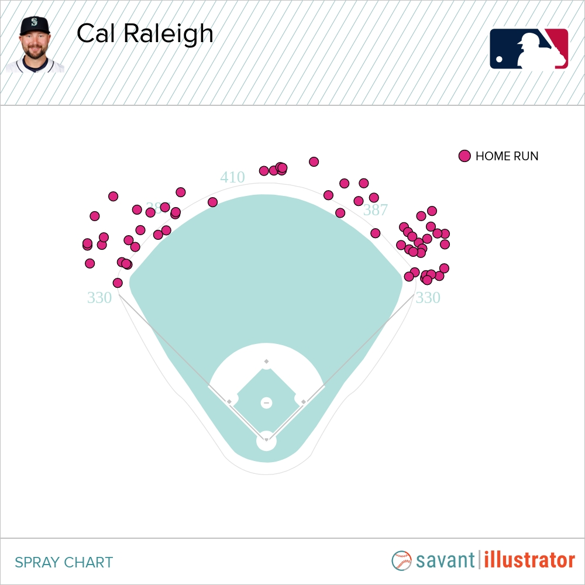
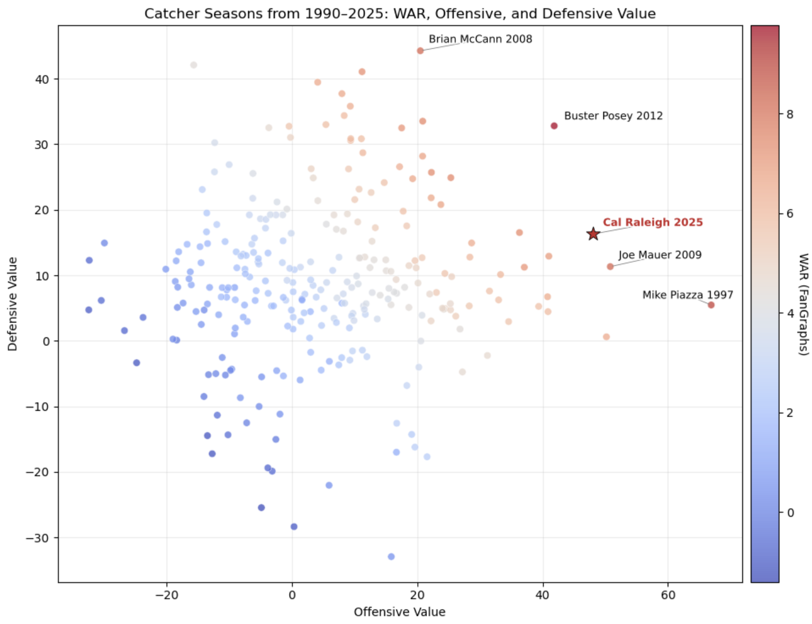
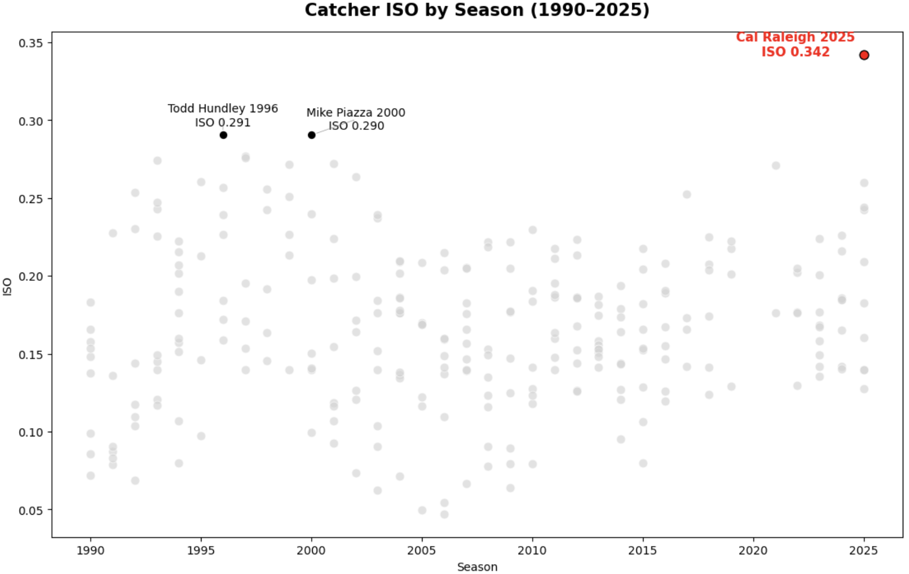
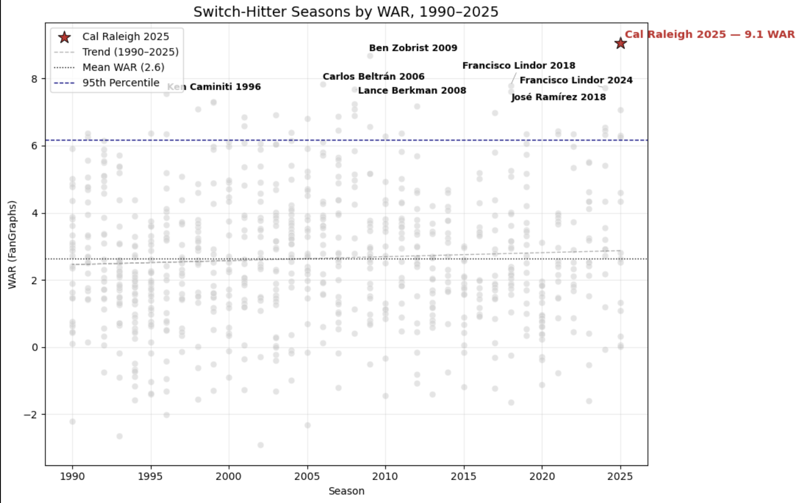
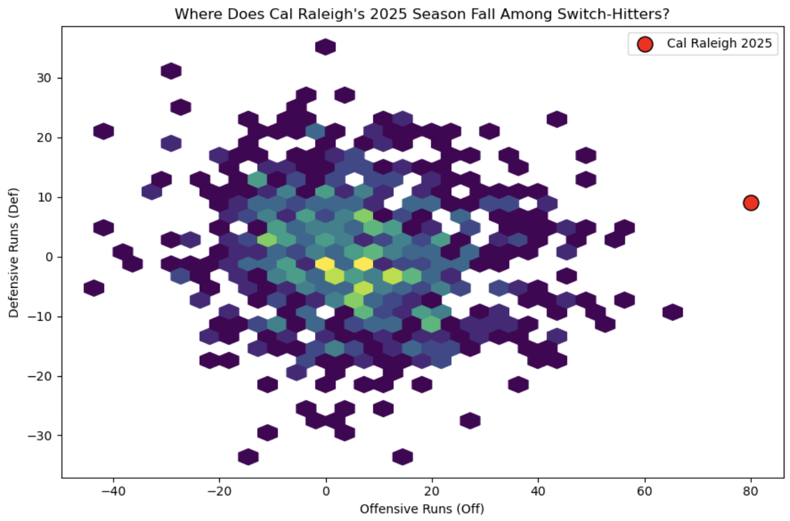

Just How Extraordinary Was Cal Raleigh's 2025 Season?
By Zack Bukovec | January 13, 2026
Context:
Since the genesis of the modern Major League Baseball in 1901, there have only been 125 home-run champions crowned. Out of those 125, only two have been switch-hitters, and only one catcher, Cincinnati Reds' Johnny Bench in 1970 and 1972, led the MLB in home runs. That is a remarkable achievement, even more so when you look at the numbers for other catchers. Todd Hundley, a catcher for the Mets, came close in 1996 with 41 dingers, but still only ranked 11th overall in home runs that year.
History was made again in 2025 when the catcher for the Seattle Mariners, Caleb “Cal” Raleigh, broke this century-long record, toppling the Yankees' Aaron Judge with a whopping 60 home runs. Raleigh wasn’t just a reliable home run hitter; he was a versatile hitter and could send a ball over the fence from anywhere on the field. Here’s a picture of where his homers left the yard, courtesy of Baseball Savant:
Controversy behind the Numbers:
Raleigh has had his skeptics. His 0.247 batting average on the season and use of new technology in batting (the torpedo bat) prompted speculation about the source of Raleigh’s power hitting. Was Cal Raleigh’s record-breaking 2025 season a true milestone in catcher history or just a fluke?
Framing the Catcher Position:
In order to examine the nature of Raleigh’s 2025 season, it’s important first to consider the position he plays. The catcher position is well-known for having the highest physical and mental burden in baseball, requiring them to squat for hours (half the game or more) with around 50 pounds of gear. Catchers must also use their bodies to absorb foul tips and block balls in the dirt, and sprint after loose balls, while also being responsible for pitch-calling and signaling to the pitcher on the mound. These responsibilities take a toll on the body and mind, which is why sometimes teams will justify a mediocre offensive performance from a catcher who contributes well to the team through defense and offense coordination.
Historically, catchers with elite-level hitting seasons are rare. To put Cal Raleigh’s season into perspective, I examined recent catcher season performances from 1990 to 2025. The plot below shows the range of single-season performances, measuring overall value with the Wins Above Replacement (WAR) metric, combined with Offensive and Defensive Value, all of which are metrics recorded by the statsbook FanGraphs.
From the plot, it is evident that Raleigh’s 2025 breakout season lands at the top of single-season catcher performances. It’s especially impressive when considering how few rest days Raleigh had during the regular season. Because he was such a reliable hitter, when Raleigh wasn’t catching, the Mariners would still include him in the lineup at Designated Hitter for his power. Few catchers have been able to balance such a heavy workload with MVP-caliber performance. Arguably, none have done it at Raleigh’s level.
The Big Dumper and the Torpedo Bat:
Cal Raleigh stood out primarily through his power hitting, not just his offensive and defensive value. Power isn’t captured by mainstream statistics like batting average, where Raleigh’s initial .247 batting average led some fans to downplay his potential. To further evaluate Raleigh’s pure power, we must examine the ISO metric, or Isolated Power. ISO is measured by taking the difference between slugging percentage and batting average, thus isolating how much any hitter's production comes from extra-base hits instead of singles.
Catchers tend to have lower ISO values than other positions due to the fatigue of the position, making ISO a key distinguishing metric for catcher performance. The plot below shows Catcher ISO by season from 1990 to 2025:
Raleigh’s 2025 season stands out far above the rest. This level of isolated power is rare for any player to achieve, but for a full-time catcher, it’s remarkable.
It is also important to address the minute torpedo bat controversy. The torpedo bat is a league-approved piece of batting equipment that redistributes mass toward the handle, reducing moment of inertia and ultimately leading to a lighter, more controlled swing. This is mainly used by taller or bigger-bodied players, like Cal Raleigh, who is listed at 6’2 and 235 pounds. The torpedo bat was used by 10-15% of batters in the 2025 season. Raleigh only used the torpedo bat when batting on his left side. This means that 22 out of 60 of his home runs were hit without the torpedo bat, which is a number greater than the number of home runs most big league players reach in a single season. With slightly over one-third of his home runs from standard bats while hitting on the right side, Raleigh demonstrates that he’s able to deliver on his power regardless of bat style.
Switching Things Up:
There’s another factor that makes Raleigh’s performance stand out even more. Raleigh led the league in home runs as a switch-hitter. Switch-hitting offers strategic advantages by targeting a pitcher’s perceived weakness, but it often comes with a tradeoff in accuracy and power. Any switch-hitter must develop two unique swings, each with its own mechanics and kinks, which typically leads to less power when compared to a pure left or right-handed slugger. That is why the list of switch-hitters with dominant offensive seasons is relatively short. Below is a graphic of all switch-hitting seasons at every position from 1990 to 2025, with Wins Above Replacement (WAR) highlighted.
This graphic highlights how rare elite switch-hitting seasons are in modern baseball. Players like Francisco Lindor and Jose Ramirez, both known for consistent offensive output, populate the upper part of the chart. Raleigh’s 2025 season is at the top of the graphic with the highest WAR value and, unsurprisingly, is the only catcher in the upper region.
To further analyze where Raleigh fits among switch-hitters, I created a Hexplot to visualize the breakdown of single-season switch-hitter performances from 1990 to 2025, considering both offensive runs contributed and defensive runs saved via FanGraphs statistics.
Once again, Cal Raleigh is an outlier on multiple fronts. Many great switch-hitters deliver offensive performance with a less physically demanding defensive position. Raleigh’s season reveals an impactful performance on both sides of the plate, performing above average defensively and off-the-charts offensively. His heavy defensive workload amplifies how remarkable his many offensive contributions were, making for a generational, MVP-caliber showing for the 28-year-old slugger.
Closing Words:
Cal Raleigh’s 2025 season can’t be defined by a single statistic or a new piece of equipment. It is unique when you consider the whole context of his contributions, such as the physical and mental demands of catching and the difficulty in power switch-hitting. Statistics support the simple truth that Raleigh’s output was at an elite level throughout the entire season, regardless of skepticism or controversy about batting average and bat choices. Data shows that Raleigh hit for serious power while meaningfully contributing on both sides of the plate at a level that very few, if any, players at his position have ever reached. Cal Raleigh’s 2025 masterclass was not a fluke. It was a dominant and historic performance from a player who did something Major League Baseball had never seen before – handily beat the home run record for both catchers and switch-hitters, with power distributed across the plate. The real question is if Cal Raleigh can do it twice, matching Johnny Bench’s home run crowns from 1970 and 1972.